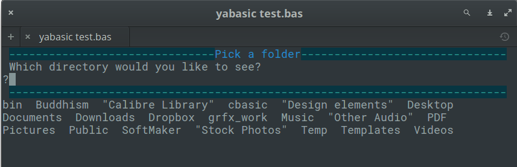
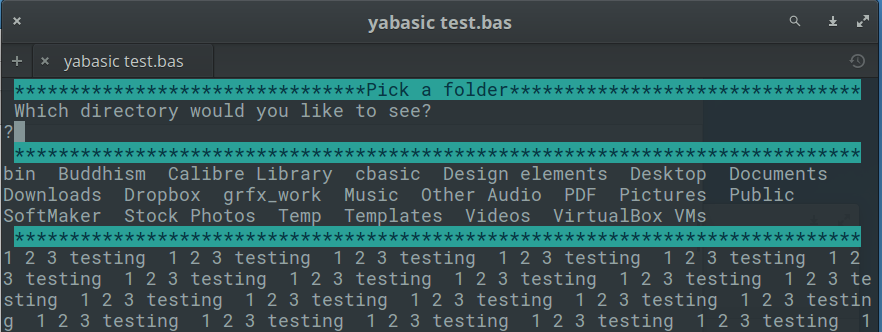
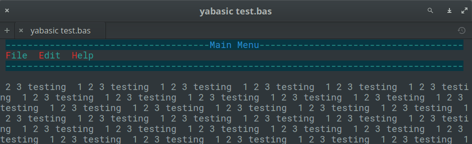
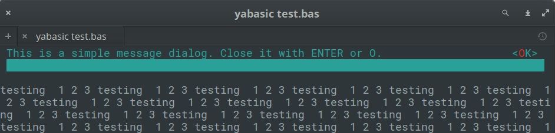

clasquinatorlib.yab
A yabasic library (c) Michel Clasquin-Johnson 2018.
Licensed accordingto the MIT license
If you are reading this as a man page, be advised that you can see it in glorious HTML, with pictures even, at https://clasqm.github.io/
This library allows yabasic to display a variety of dialogs in text mode without making use of external commands.
Some routines will perhaps also be made available in graphics mode. Maybe, one day. I am a better text mode programmer, what can I say?
The library is written as a textmode application and must be run in a terminal. It will not be useful in a headless script.
The entire set of libraries focuses on sane defaults and getting basic functionality into yabasic.
The images below are for illustration only. The exact appearance of the dialogs will depend on your system settings.
Developed on elementary OS 0.4 "Loki" and Lubuntu 18.04 (i.e. Linux), but it should work on any *NIX system that will run yabasic. Testing on Windows has been far more sketchy, since I don't have a windows box here, but I did what I could in my lunch break at work ;-).
The library should exist either in the same folder as your program (symlinks work) or in the standard yabasic library location on your system.
To use the library, use the command
import clasquinatorlib
If you would rather cut and paste these subroutines into your own program rather than importing this rather large library, or create your own, smaller library with just the routines you need, be my guest (I would appreciate a note of acknowledgement in your code). But some subroutines require supporting routines that you will find at the end of this library. You will have to include those as well.
You should not use this library and one of the others in this set that provides dialogs concurrently, because they replicate subroutine names. Pick the right one for your program and stick with it!
Unlike the other libraries, you cannot use \n to break a line in your text variables. Keep that in mind if compatibility between the libraries is important.
By default, widgets are drawn in cyan, with button and menu triggers in red and the title in blue. But you can override this by setting the GLOBAL variables menu_colour$, title_colour$ and trigger_colour$. There is a routine ChangeColour() to make this easier.
The "buttons" are not mouse-aware.
The first letter of each button or menu item automatically becomes the trigger. Both lower and upper case variants will activate it. It is up to you to ensure that you do not use menu items that start with the same letter.
Hint: You can always number them, e.g.
menuitem1$ = "1.File"
This will make the menu react to the "1" key being pressed, rather than "f" or "F".
If the text of a message (usually in the variable text$) is too long to fit in one line, it will be truncated. This may vary with the width of the user's terminal window, so be conservative!
Excessive quote marks (required in other libraries and often supplied by EncloseText$() or \"\") will be removed by the library to maintain compatibility.
Excessive spaces at the front and back of text$ will be trimmed, but multiple spaces within text$ will be maintained.
This library is currently still in the development stages and not really usable. But watch this space!
Variables
This library requires a small number of global variables. You do not need to initialize them, but don't use the following variable names in your program unless you have a very good reason.
- menu_colour$
- title_colour$
- trigger_colour$
- screenheight
- screenwidth
External utilities required
I didn't quite manage to get away with writing this library without making any system calls. You will need the following commands to be installed on your system.
If you don't have these, your system is broken and you really, really need to reinstall your operating system. So I'm not going to worry about it.
Routines available:
This library poaches as many ideas as possible from the other four dialog-providing libraries, but there is not 100% compatibility here, so we will not divide things into Common and Clasquinator-specific sections.
All
- ChangeColour()
- ClearDlg()
- EncloseText$()
- getcmd$()
- GetDirDlg$(), GetDirDlg2$(), GetDirDlg3$(), GetDirDl4$()
- GetFileDlg$, GetFileDlg2$,GetFileDlg3$, GetFileDlg4$
- InputDlg$(), InputDlg2$(), InputDlg3$(), InputDlg4$()
- MakeDirDlg$, MakeDirDlg2$, MakeDirDlg3$, MakeDirDlg4$
- MakeFileDlg$, MakeFileDlg2$, MakeFileDlg3$, MakeFileDlg4$
- MenuDlg(), MenuDlg2(), MenuDlg3(), MenuDlg4()
- MessageDlg(), MessageDlg2(), MessageDlg3(), MessageDlg4()
- PasswordDlg$(), PasswordDlg2$(), PasswordDlg3$(), PasswordDlg4$()
- RadioDlg(), RadioDlg2(), RadioDlg3(), RadioDlg4()
- StringDisplayDlg(), StringDisplayDlg2(), StringDisplayDlg3(), StringDisplayDlg4()
- SubMenuDlg(), SubMenuDlg2(), SubMenuDlg3(), SubMenuDlg4()
- TestForDialogUtility$()
- TextFileDlg(), TextFileDlg2(), TextFileDlg3(), TextFileDlg4()
- WaitDlg(), WaitDlg2(), WaitDlg3(), WaitDlg4()
- YesNoDlg(), YesNoDlg2(), YesNoDlg3(), YesNoDlg4()
ChangeColour(menu$, title$, trigger$)
- Change the three colours used in this library.
- The value menu$ is used to draw most elements.
- The value title$ is used to print the title of those widgets that have them (but only in the default command set, in the others like blablaDlg2(), blablaDlg3() and so on it is calculated to either black or white for legibility).
- The value trigger$ is the highlighted letter on buttons and menu items.
- The colours available are the normal ones yabasic can handle, namely "black", "white", "red", "blue", "green", "yellow", "cyan" and "magenta" (which can be abbreviated as "bla", "whi", "red", "blu", "gre", "yel", "cya" and "mag" respectively).
- The library does not check if the two colours are identical, or if they complement each other visually. If you want to make your menus unreadable, more power to you!
+The background colour of widgets is always black (well, actually, it is whatever your terminal's default background colour is), but your program's colours will be restored to whatever they were when a widget closes.
- To return to the default set, use the command
ChangeColourToDefault().
ClearDlg()
- On dialog and whiptail, this clears the dialog from your terminal. Same as the yabasic command CLEAR SCREEN, but may work better if you are expecting to issue another Linux command immediately.
- On zenity, clasquinator and kdialog, dummy routines are provided for compatibility so that you do not need to rewrite your code.
EncloseText$(thestring$)
- A simplified version of the EncloseString$() routine that can be found in the linuxmisclib library
- Encloses a string in double quotes, if it isn't already.
- Therefore a$ = EncloseText$("This is text") gives the same result as a$ = "\"This is text\""
- Mostly for use with filenames that may include spaces.
getcmd$()
- Returns the command set available.
- This is really just for me, to stop me from getting confused while I am editing four libraries simultaneously.
- However, you could use it to test which utility (or library, in the case of clasquinator) is currently in use and if it is safe to use routines not in the common list.
- e.g, if getcmd$() = "clasquinator" SubmenuDlg(options ....)
- or if getcmd$() = "zenity" ZNotifyDlg("this is a notification")
GetDirDlg$(title$, text$, start$)
- Select a directory to open.
- Displays the available directories but requires user to type it in.
- The value title$ is the title on top of the widget
- The value start$ is the initial directory to start from. If blank or not supplied,this defaults to the current directory.
- Data entry is CASE-SENSITIVE, but you do not need to type the quote marks supplied for filenames with spaces.
- Result is returned as a string value with quote marks and extra (leading or trailing) spaces stripped off.
- An empty string is returned, if there are no existing directories.
- ONLY available in clasquinator, but there are equivalents in zenity and kdialog.
- Now works in windows, but there are display bugs to work out.
- Example:
a$ = GetDirDlg$("Pick a folder", "Which directory would you like to see?","~")

- GetDirDlg2$(title$, text$, start$)
- Select a directory to open.
- Same as GetDirDlg$() but looks different.
- Example:
a$ = GetDirDlg2$("Pick a folder", "Which directory would you like to see?","~")
- GetDirDlg3$(title$, text$, start$)
- Select a directory to open.
- Same as GetDirDlg$() but looks different.
- Example:
a$ = GetDirDlg3$("Pick a folder", "Which directory would you like to see?","~")

- GetDirDlg4$(title$, text$, start$)
- Select a directory to open.
- Same as GetDirDlg$() but looks different.
- Example:
a$ = GetDirDlg4$("Pick a folder", "Which directory would you like to see?","~")
- GetFileDlg$(title$, text$, start$)
- GetFileDlg2$(title$, text$, start$)
- GetFileDlg3$(title$, text$, start$)
GetFileDlg4$(title$, text$, start$)
- Select a file to open.
- Displays the available files but requires user to type it in.
- The value title$ is the title on top of the widget
- The value start$ is the initial directory to start from. If blank or not supplied,this defaults to the current directory.
- Data entry is CASE-SENSITIVE, but you do not need to type the quote marks supplied for filenames with spaces.
- Result is returned as a string value with quote marks and extra (leading or trailing) spaces stripped off.
- An empty string is returned. if there are no existing files.
- ONLY available in clasquinator, but there are equivalents in zenity and kdialog.
InputDlg$(text$, title$, ok$, cancel$)
- InputDlg2$(text$, title$, ok$, cancel$)
- InputDlg3$(text$, title$, ok$, cancel$)
- InputDlg4$(text$, title$, ok$, cancel$)
- Presents a one-line dialog into which the user can type a string answer.
- The value title$ is the title on top of the widget.
- The values ok$ and cancel$ are not used in clasquinator and may be omitted. They are kept in the code for compatibility reasons.
- ENTER accepts the input, which can also be an empty string.
- The empty string counts as the equivalent of a cancel button.
- The result is returned as a string value.
- Examples:
a$ = InputDlg$("What is your name?", "Who are you?")

a$ = InputDlg2$("What is your name?", "Who are you?")
- MakeDirDlg$(title$, text$, start$)
- MakeDirDlg2$(title$, text$, start$)
- MakeDirDlg3$(title$, text$, start$)
MakeDirDlg4$(title$, text$, start$)
- Create a directory.
- Same as GetDirDlg$() but allows user to type a new filename so that it can be created.
- Will not allow duplicate filenames to be selected.
- see GetDirDlg$() for examples.
MakeFileDlg$(title$, text$, start$)
- MakeFileDlg2$(title$, text$, start$)
- MakeFileDlg3$(title$, text$, start$)
MakeFileDlg4$(title$, text$, start$)
- Create a file.
- Same as GetFileDlg$() but allows user to type a new filename so that it can be created.
- Will not allow duplicate filenames to be selected.
- see GetDirDlg$() for examples.
MenuDlg$(title$, menustring$, level, mainmenustring$)
- MenuDlg2$(title$, menustring$, level, mainmenustring$)
- MenuDlg3$(title$, menustring$, level, mainmenustring$)
- MenuDlg4$(title$, menustring$, level, mainmenustring$)
- Create a one-line menu of options for the user to choose from.
- The value title$ is the title on top of the widget.
- The value menustring$ is the list of menu options as a single string, separated by hash signs (#). Spaces are allowed.
- The value level can be either 0 for a primary menu or 1 for a submenu.
- If level = 1 mainmenu$ must also be supplied, otherwise it is not required. This is the menustring$ of the originating menu.
- The first letter of menu item automatically becomes the trigger. Both lower and upper case variants will activate it. It is up to you to ensure that you do not use menu items that start with the same letter.
- Menus will only be displayed to the width of the terminal, so keep them short!
- Results are returned as a string variable, which will be the trigger in lowercase.
- Submenus can also be created with the SubMenuDlg$(title$, menustring$) routine, which is an alias to this one and does not require the level parameter.Therefore the following two commands are completely equivalent:
MenuDlg$("File menu","Open#Close#Exit",1, "File#Edit#Help")
SubMenuDlg$("File menu","Open#Close#Exit","File#Edit#Help")
Examples:
a$ = MenuDlg$("Main Menu", "File#Edit#Help", 0)

a$ = MenuDlg$("Help Menu", "Help#About", 1, "File#Edit#Help")
As you would expect by now there are commands called MenuDlg2$() and SubMenuDlg2$() and so on to change the appearance of the menus.
a$ = SubMenuDlg2$("Help Menu", "Help#About", "File#Edit#Help")
- MessageDlg(text$, ok$)
- MessageDlg2(text$, ok$)
- MessageDlg3(text$, ok$)
- MessageDlg4(text$, ok$)
- Display a simple message with an OK button.
- The value ok$ is the text of the accept button, normally OK.
- You only have one line to play with, so keep those messages short!
- Returns nothing, therefore does not actually trap the keypress. But the trigger is highlighted to ensure uniformity among the library's widgets
- Examples:
MessageDlg("This is a simple message dialog. Close it with ENTER or O.","OK")

MessageDlg2("This is a simple message dialog. Close it with ENTER or O.","OK")

- PasswordDlg$(text$, title$, ok$, cancel$)
- PasswordDlg2$(text$, title$, ok$, cancel$)
- PasswordDlg3$(text$, title$, ok$, cancel$)
PasswordDlg4$(text$, title$, ok$, cancel$)
- Supplied for compatibility purposes, but here it is just an alias for InputDlg$() - inputs are not obfuscated with asterisks.
RadioDlg$(title$, menustring$, level, mainmenustring$)
- RadioDlg2$(title$, menustring$, level, mainmenustring$)
- RadioDlg3$(title$, menustring$, level, mainmenustring$)
RadioDlg4$(title$, menustring$, level, mainmenustring$)
- In clasquinator, this is an alias to MenuDlg$(), provided for compatibility.
StringDisplayDlg(string$, title$, exit$)
- StringDisplayDlg2(string$, title$, exit$)
- StringDisplayDlg3(string$, title$, exit$)
- StringDisplayDlg4(string$, title$, exit$)
- Displays a string in a box in the middle of the screen.
- This box will always be three lines from the top and bottom of the terminal and three columns from the left and right. Resing the terminal will count as a keypress in some operating system!
- Any key exits if the string has been completed,or shows the next screen if there is more.
- The value title$ is the title on top of the widget.
- The value exit$ is the title of the button, normally OK.
- This button is a dummy, just for looks.
- It works better if you keep your string reasonably short, since there is no escape button if you make the user page through 100 pages!
- To open up a new line, embed " # " (a hash mark surrounded by spaces) in your string. You can even open up multiple lines with " # # " and so on.
- Returns nothing
- Example:
a$ = "This is the string to display. Let's make it long so that wordwrap is enforced."
StringDisplayDlg(a$, "String Display Test", "OK")
OR
a$ = "This is the string to display. Let's make it long so that wordwrap is enforced."
StringDisplayDlg2(a$, "String Display Test", "OK")

(Composite of the commands StringDisplayDlg() and StringDisplayDlg2() pictured above)
- SubMenuDlg$(title$, menustring$, mainmenustring$)
- SubMenuDlg2$(title$, menustring$, mainmenustring$)
- SubMenuDlg4$(title$, menustring$, mainmenustring$)
SubMenuDlg4$(title$, menustring$, mainmenustring$)
TestForDialogUtility$()
- Routine to test if the called utility actually exists on the system.
- An empty string returned means it does, otherwise an error message is returned.
- in clasquinator, this is a dummy routine provided for compatibility. It will always return an empty string.
TextFileDlg(filename$, title$, exit$)
- TextFileDlg2(filename$, title$, exit$)
- TextFileDlg3(filename$, title$, exit$)
- TextFileDlg4(filename$, title$, exit$)
- Displays a text file in a box in the middle of the screen.
- In appearance this looks exactly like StringDisplayDlg() or StringDisplayDlg2() and so on, respectively.
- This box will always be three lines from the top and bottom of the terminal and three columns from the left and right. Resing the terminal will count as a keypress in some operating system!
- Any key exits if the file has been completed,or shows the next screen if there is more.
- The value title$ is the title on top of the widget.
- The value exit$ is the title of the button, normally OK.
- This button is a dummy, just for looks.
- It works better if you keep your file reasonably short, since there is no escape button if you make the user page through 100 pages!
- This is meant for simple text files. Trying to feed it complex HTML or Markdown documents is not recommended.
- It is actually better if your text file is not formatted with hard returns. Rather let this routine handle the word wrapping.
- Returns nothing.
- Example:
TextFileDlg2("./pg4.txt", "The Gettysburg Address", "OK")

- WaitDlg(onoff, text$)
- WaitDlg2(onoff, text$)
- WaitDlg3(onoff, text$)
- WaitDlg4(onoff, text$)
- Display a small box with a centred one-line "Please wait" message or anything else that requires no response.
- Use this while you do something else that may take a while that does NOT involve printing to screen.
- If you do print, it will be wiped out when you close the dialog.
- Keep your message short! You only have thirty characters to play with.
- To display the message, onoff should be 1 and text$ must be supplied.
- To remove the dialog and bring the original screen back up, just use WaitDlg(0). This works even if you used WaitDlg2() to create the dialog.
- Returns nothing.
- Example:
WaitDlg2(1, "Please wait")
wait 4 //this is where you would do other stuff
WaitDlg(0)
- YesNoDlg(text$,yes$, no$)
- YesNoDlg2(text$,yes$, no$)
- YesNoDlg3(text$,yes$, no$)
- YesNoDlg4(text$,yes$, no$)
- Displays a dialog with text (normally a question) and the options to reply yes or no.
- The first letter of the yes$ and no$ variables will become the hotkeys for those buttons, so make sure they are different. Hotkeys are case-insensitive.
- no$ is actually a dummy here: pressing anything other than the hotkey for yes$ will return a no.
- Instead of "Yes" and "No", these labels could also ber something like "Accept" and "Cancel". This is why this library does not have a separate AcceptCancelDlg routine.
- NOTE: pressing ENTER means NO. If this is not what you want, just swap the labels yes$ and no$ around, and yes$ will become the dummy that is the default on every keypress except the hotkey for no$.
- e.g. YesNoDlg(text$, no$, yes$, altsymbol$) - See the second example below.
- This will also reverse the way they are displayed. This routine only tests for the button on the left.
- Returns 1 for yes and 0 for no.
- Examples:
YesNoDlg("Can you see this? Press Y if you can.", "Yes!", "No")

```
YesNoDlg4("Erase all data from the hard drive?.", "No!", "Yes")
```